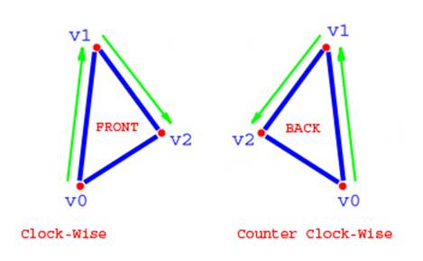
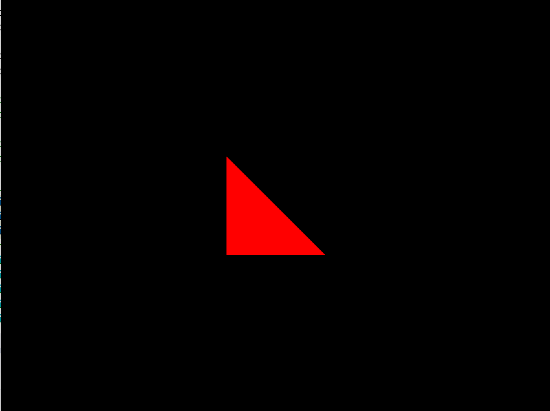
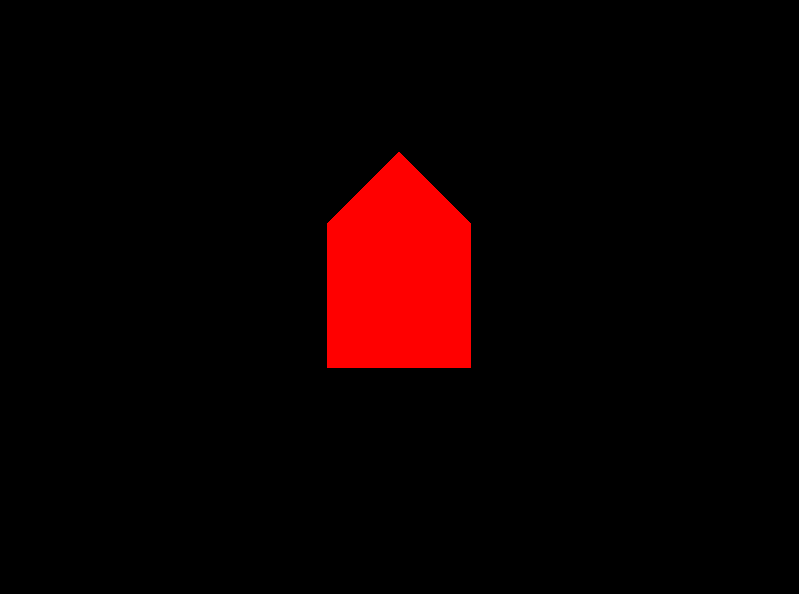

COMP 2501 - Winter 2014 Tutorial #1
DirectX 11 Setup and Drawing a Triangle
Description:
The purpose of this tutorial is to familiarize yourself with the tools used to draw geometric shapes in a DirectX 11 application in Microsoft Visual Studio 2012. We will walk through the basics and eventually draw our first shapes.
To get credit for the tutorial you must complete, or make significant progress, on the problems provided and demonstrate your results to the tutorial TA.
If you cannot complete the tutorial in the time allotted you may demonstrate the completed results to the TA during their office hours.
These tutorials are based on the Rastertek set of tutorials.
Instructions:
Overview
Open Microsoft Visual Studio 2012 and open the project found in the tutorial1 folder. Run the project (hit F5), it should build and open a borderless window with a black background. You can close this window by pressing Esc.
For now we will ignore most of the code in the project. The functionality we are immediately interested in is the drawing of geometry to the screen. There are many components to this, but the most important ones for now are located in modelclass.cpp. Open that file.
Examine the class. The code that describes the geometry of the shapes we want to draw to the screen is located in the InitializeBuffers method. The purpose of this method is to configure and then create a vertex buffer and an index buffer. These buffers contain all of the information required to draw our shapes to the screen.
Notice the variables we maintain. The most important ones are as follows:
VertexType* vertices; // array to hold our shape's vertices
unsigned long* indices; // array to hold the indices of our shape's vertices
D3D11_BUFFER_DESC vertexBufferDesc, indexBufferDesc; // descriptions of our buffers
D3D11_SUBRESOURCE_DATA vertexData, indexData; // buffer data
A detailed description of each of the variables follows:
Throughout the method we configure these variables and, once complete, combine them together to create our buffers:
// Now create the vertex buffer.
result = device->CreateBuffer(&vertexBufferDesc, &vertexData, &m_vertexBuffer);
...
// Create the index buffer.
result = device->CreateBuffer(&indexBufferDesc, &indexData, &m_indexBuffer);
Note: result is of type HRESULT, which is simply a data type used in Windows to represent error conditions.
Problem 1)
Continue to examine the InitializeBuffers method. Observe that we are currently specifying a vertex to be drawn.
// Load the vertex array with data.
vertices[0].position = XMFLOAT3(-1.0f, -1.0f, 0.0f); // Bottom left.
vertices[0].color = XMFLOAT4(0.0f, 1.0f, 0.0f, 1.0f);
This vertex, and all future vertices in this project, are of type VertexType, defined elsewhere in modelclass.h:
struct VertexType
{
XMFLOAT3 position;
XMFLOAT4 color;
};
Our vertices are composed of two vectors, one 3-dimensional and one 4-dimensional, representing position and color respectively. Position is a vector composed of x, y, and z coordinates (we'll only be dealing with 2 dimensions, x and y, in this first tutorial). Color is composed of 4 values, corresponding to an RGBA (Red-Green-Blue-Alpha) value.
Using this initial vertex as an example, add two more vertices to our vertices array to make a complete right-angle triangle. Use the same color value (red) for all vertices. Hint: you will have to change a little more than just adding the lines for the new vertices. Don't forget to update the indices array as well!
You will notice that nothing is visible on the screen until we have made a complete triangle. This is the way that we build our shapes, through triangles.
Warning: DirectX uses counter-clockwise backface culling. Backface culling is a technique used for performance reasons. The principle is that since users will never see the backside of a polygon, there is no need to render it. DirectX determines which way a polygon is facing by the order in which it is drawn. If drawn counter-clockwise, you will be looking at the back of the polygon, and it will be invisible to you. Draw polygons clockwise to see their front face. For more information, see here.

After completing the problem, you should see a red right-angle triangle drawn on your screen.

Problem 2)
Transform your red triangle into a red square by filling the vertices array with the 3 vertices required to complete the square (2 of which will be duplicates). Also, add 3 more vertices to draw a red triangle just above your square, forming a kind of house.
Don't forget to update the indices array as well. Be careful of the order in which you add the vertices.
After completing the problem, you should see a red square drawn on your screen, with a red triangle on top of it.

Problem 3)
To improve performance it's always better to avoid duplicating the vertices in our shape. For this problem, draw the red square and red triangle to the screen, as before, except use only 5 vertices instead of 9, removing the duplicates.
To accomplish the task of drawing the house with only 5 vertices we'll have to use our indices array. Remember that it tells the GPU which vertices to draw, and in which order to draw them. Hint: our indices array does not need to be the same size as our vertices array.
Problem 4)
Create a rainbow house. Change the color of each of the vertices to something different. Remember each 4-dimensional color vector represents an RGBA value.
Notice what happens to the color of the house. Color values are interpolated between vertices. This is done by the pixel shader, which we will cover more in depth in a future tutorial.
After completing the problem, you should have created some kind of rainbow house.

When you have completed these problems demonstrate your code to the TA's to get credit for the tutorial.